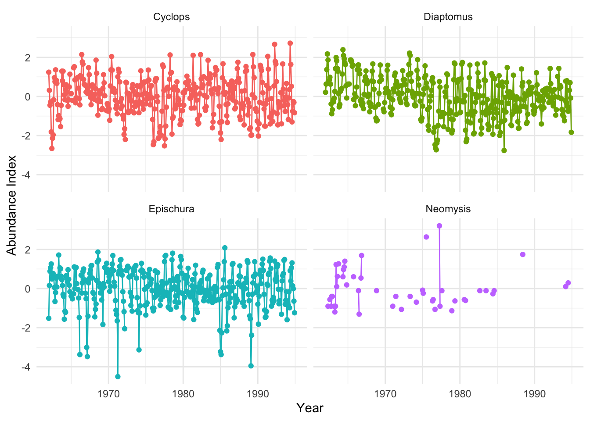
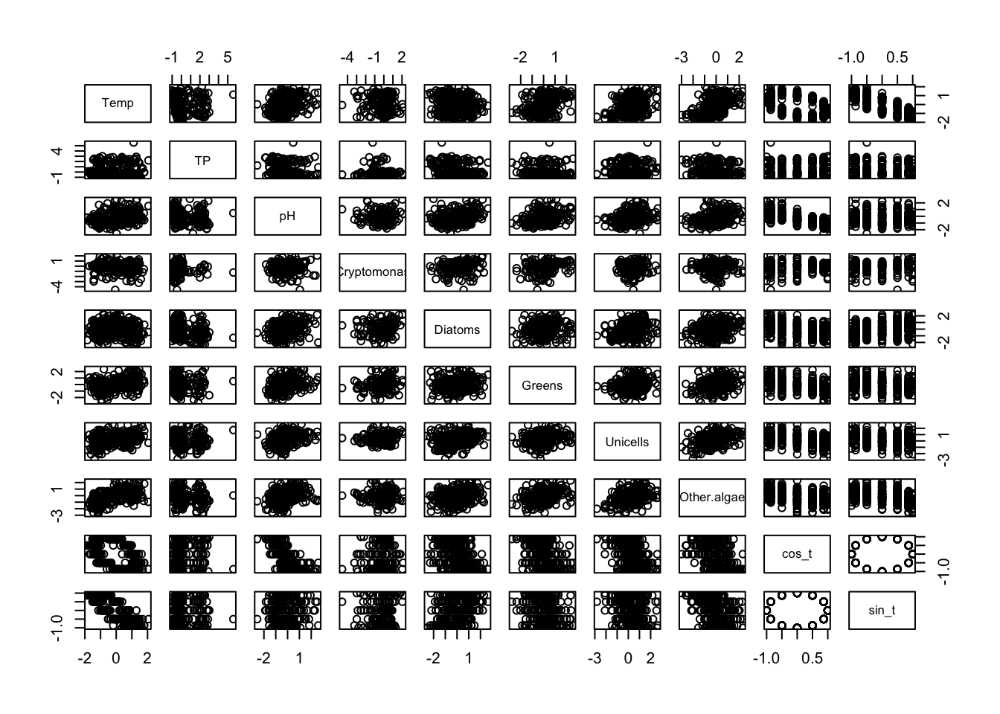
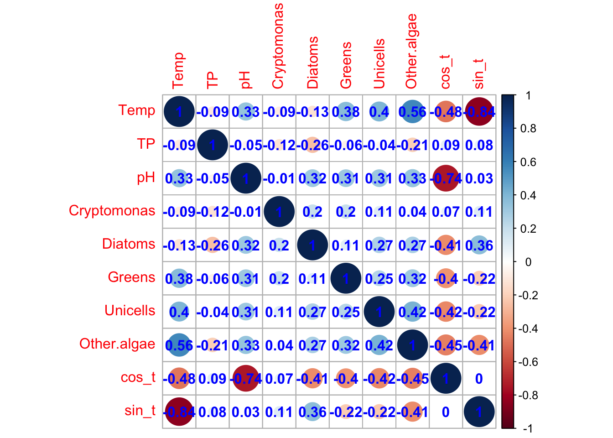
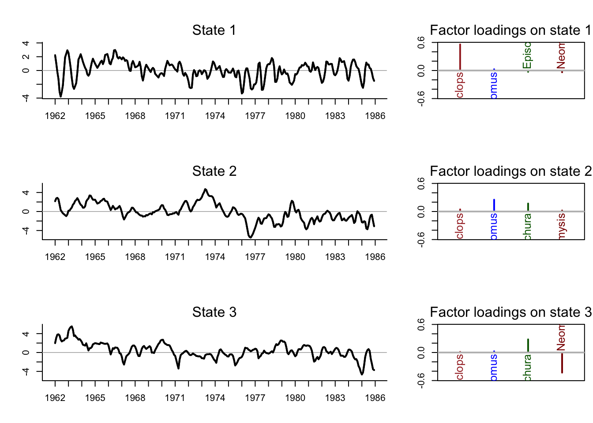

library(tidyverse)library(zoo)get_DFA_fits <-function(MLEobj, dd =NULL, alpha =0.05) {## empty list for results fits <-list()## extra stuff for var() calcs Ey <- MARSS:::MARSShatyt(MLEobj)## model params ZZ <-coef(MLEobj, type ="matrix")$Z## number of obs ts nn <-dim(Ey$ytT)[1]## number of time steps TT <-dim(Ey$ytT)[2]## get the inverse of the rotation matrix H_inv <-varimax(ZZ)$rotmat## check for covarsif (!is.null(dd)) { DD <-coef(MLEobj, type ="matrix")$D## model expectation fits$ex <- ZZ %*% H_inv %*% MLEobj$states + DD %*% dd } else {## model expectation fits$ex <- ZZ %*% H_inv %*% MLEobj$states }## Var in model fits VtT <-MARSSkfss(MLEobj)$VtT VV <-NULLfor (tt in1:TT) { RZVZ <-coef(MLEobj, type ="matrix")$R - ZZ %*% VtT[, , tt] %*%t(ZZ) SS <- Ey$yxtT[, , tt] - Ey$ytT[, tt, drop =FALSE] %*%t(MLEobj$states[, tt, drop =FALSE]) VV <-cbind(VV, diag(RZVZ + SS %*%t(ZZ) + ZZ %*%t(SS))) } SE <-sqrt(VV)## upper & lower (1-alpha)% CI fits$up <-qnorm(1- alpha/2) * SE + fits$ex fits$lo <-qnorm(alpha/2) * SE + fits$exreturn(fits)}
Data
We decided to model 4 groups of zooplankton: Cyclops, Diaptomus, Epischura, and Neomysis. We chose to test environmental covariates (temp, pH, TP), as well as phytoplankton abundances as covariates(cryptomonas, diatoms, greens, unicells, other.algae) since the zooplankton we chose are copepods and mysids, and therefore may be impacted by the type of phytoplankton present. We used data from the start of the time series (1962) until 1985, because the Neomysis data gets very patchy after the 1980s and we didn’t want this to cause issues with model fitting.
Load the data
Code
## load MARSS for data and analyseslibrary(MARSS)## load the raw data (there are 3 datasets contained here)data(lakeWAplankton, package ="MARSS")## we want `lakeWAplanktonTrans`, which has been transformed## so the 0's are replaced with NA's and the data z-scoredall_dat <- lakeWAplanktonTrans
Wrangle the data
You can choose any taxa to include in your analyses, but make sure there are at least 5 groups. You can mix phytoplankton and zooplankton, if you’d like, but justify any choices you make.
You will want to subset the data to a time period with adequate observations for the taxa of interest. Your time window should include at lest 5 years (60 months).
Zooplankton
Code
## plotting the taxa of interestall_dat %>%as_tibble() %>%mutate(Date =as.yearmon(paste(Year, Month), "%Y %m")) %>%select(c("Date", "Cyclops", "Diaptomus", "Epischura", "Neomysis")) %>%pivot_longer(-c(Date), names_to ="Species", values_to ="Vals") %>%ggplot(aes(x = Date, y = Vals, color = Species)) +geom_point() +geom_line() +facet_wrap(~Species) +scale_x_yearmon(format ="%Y") +theme_minimal() +labs(y ="Abundance Index", x ="Year") +theme(legend.position ="none")

Code
#using data up to 1985spp<-c("Cyclops", "Diaptomus", "Epischura", "Neomysis")dat_1985<-all_dat[all_dat[, "Year"] <=1985,]dat_zoo_1985<-dat_1985[, spp]#head(dat_zoo_1985)dat_zoo<-t(dat_zoo_1985)yr_frst <-min(dat_1985[,"Year"])yr_last <-max(dat_1985[,"Year"])
Code
## get number of time seriesN_ts <-dim(dat_zoo)[1]## get length of time seriesTT <-dim(dat_zoo)[2] ## mean of each taxony_bar <-apply(dat_zoo, 1, mean, na.rm =TRUE)## subtract the meansdat <- dat_zoo - y_bar## assign new row namesrownames(dat) <- spp
#looking at any correlation issues for covariatespairs(cbind(dat_1985[,covs],t(dd)))

Code
library(corrplot)
corrplot 0.92 loaded
Code
corrplot(cor(cbind(dat_1985[,covs],t(dd)), use ="pairwise.complete.obs"), addCoef.col ="blue")

estimating missing values
Code
# Best way is in Ch13 to fill out NA, https://cran.r-project.org/web/packages/MARSS/vignettes/UserGuide.pdf# Easy way is just to fill in with mean for purposes of this labcov_df <-cbind(dat_1985[,covs],t(dd)) %>%as.data.frame() %>%# replace na values with simply meanmutate_all(~ifelse(is.na(.x), mean(.x, na.rm =TRUE), .x))
General tasks
Each group has the same general tasks, but you will adapt them as you work on the data.
Find the most parsimonious model among a set that examines the effects of environmental covariates and/or an indicator of seasonality, varying numbers of trends, and different forms of variance-covariance matrices for the observation errors.
Plot trends and individual loadings for the model identified in task (1) above.
Plot model fits and uncertainty intervals for the model identified in task (1) above.
Describe the effects of environmental or dummy variables on (possibly seasonal) patterns in the data.
Methods
Please address the following in your methods:
Which plankton taxa did you choose and how did you choose them?
What time period(s) did you examine and why?
What environmental or dummy variables did you include and why?
What forms of models did you fit (ie, write them out in matrix form)?
What sort of model diagnostics did you use to examine model assumptions?
Data:
We chose to model four zooplankton taxa :Cyclops, Diaptomus, Epischura, and Neomysis. We chose these because they are similar types of zooplankton (copepods and mysids) which are known to be selective about the types of phytoplankton they consume (Hansen, Bjørnsen, and Hansen 1997). We used data from 1962-1985, because there is very little Neomysis data after 1985. We tested environmental covariates, including temperature, pH, and phosphorus concentrations as well as a seasonal dummy variable. We were also interested in the affect of phytoplankton abundance on these species, so we tested abundance indexes of diatoms, greens, unicells, and other.algae as potential covariates as well.
## number of processesmm <-2# this is just a placeholder, as we loop through # of states we will update this## 'BB' is identity: 1's along the diagonal & 0's elsewhereBB <-"identity"# diag(mm)## 'uu' is a column vector of 0'suu <-"zero"# matrix(0, mm, 1)## 'CC' and 'cc' are for covariatesCC <-"zero"# matrix(0, mm, 1)cc <-"zero"# matrix(0, 1, wk_last)## 'QQ' is identityQQ <-"identity"# diag(mm)
Fit with MARSS
Code
## list with specifications for model vectors/matricesmod_list <-list(Z = ZZ[[2]], A = aa, D = DD, d = dd, R = RR,B = BB, U = uu, C = CC, c = cc, Q = QQ)## list with model initsinit_list <-list(x0 =matrix(rep(0, mm), mm, 1))## list with model control parameters#con_list <- list(maxit = 3000, allow.degen = FALSE) #allow.degen not allowed for BFGScon_list <-list(maxit =3000)
Code
Z_AIC <-data.frame(states =NA,AICc=NA)for (z in1:length(ZZ)){## list with specifications for model vectors/matrices# the first mod_list is the long way of writing it out# mod_list <- list(Z = ZZ[[z]], A = aa, D = DD, d = dd, R = RR,# B = BB, U = uu, C = CC, c = cc, Q = QQ) mm <- z# model_list specification mod_list =list(m = mm, R ="diagonal and equal")## list with model initsinit_list <-list(x0 =matrix(rep(0, mm), mm, 1))## list with model control parameters#con_list <- list(maxit = 3000, allow.degen = TRUE)con_list <-list(maxit =3000)## fit MARSSdfa <-MARSS(y = dat, model = mod_list, inits = init_list, control = con_list, covariates =t(cov_df),form="dfa",method="BFGS")# get model resultsZ_AIC[z,"states"] = zZ_AIC[z,"AICc"] = dfa$AICc}
Success! Converged in 249 iterations.
Function MARSSkfas used for likelihood calculation.
MARSS fit is
Estimation method: BFGS
Estimation converged in 249 iterations.
Log-likelihood: -1024.354
AIC: 2138.707 AICc: 2143.636
Estimate
Z.11 -0.409256
Z.21 -0.085674
Z.31 0.037819
Z.41 -0.123284
R.diag 0.488030
D.(Cyclops,Temp) -0.065049
D.(Diaptomus,Temp) -0.523167
D.(Epischura,Temp) 0.316483
D.(Neomysis,Temp) -0.303331
D.(Cyclops,TP) -0.095264
D.(Diaptomus,TP) 0.231892
D.(Epischura,TP) 0.033164
D.(Neomysis,TP) 0.131168
D.(Cyclops,pH) 0.056657
D.(Diaptomus,pH) 0.236882
D.(Epischura,pH) 0.029319
D.(Neomysis,pH) 0.160363
D.(Cyclops,Cryptomonas) 0.039220
D.(Diaptomus,Cryptomonas) -0.121052
D.(Epischura,Cryptomonas) -0.112211
D.(Neomysis,Cryptomonas) 0.073532
D.(Cyclops,Diatoms) 0.163895
D.(Diaptomus,Diatoms) -0.069667
D.(Epischura,Diatoms) -0.048028
D.(Neomysis,Diatoms) 0.213371
D.(Cyclops,Greens) 0.053764
D.(Diaptomus,Greens) -0.028448
D.(Epischura,Greens) -0.113465
D.(Neomysis,Greens) -0.000335
D.(Cyclops,Unicells) 0.140911
D.(Diaptomus,Unicells) 0.063897
D.(Epischura,Unicells) 0.072608
D.(Neomysis,Unicells) 0.408725
D.(Cyclops,Other.algae) 0.179521
D.(Diaptomus,Other.algae) 0.150101
D.(Epischura,Other.algae) 0.110116
D.(Neomysis,Other.algae) 0.012215
D.(Cyclops,cos_t) -0.063268
D.(Diaptomus,cos_t) -0.859093
D.(Epischura,cos_t) -0.249775
D.(Neomysis,cos_t) 0.164887
D.(Cyclops,sin_t) 0.018376
D.(Diaptomus,sin_t) -0.166333
D.(Epischura,sin_t) -0.261342
D.(Neomysis,sin_t) -0.458475
Initial states (x0) defined at t=0
Standard errors have not been calculated.
Use MARSSparamCIs to compute CIs and bias estimates.
Success! Converged in 149 iterations.
Function MARSSkfas used for likelihood calculation.
MARSS fit is
Estimation method: BFGS
Estimation converged in 149 iterations.
Log-likelihood: -996.0389
AIC: 2088.078 AICc: 2093.698
Estimate
Z.11 0.51102
Z.21 0.09199
Z.31 -0.02876
Z.41 0.17171
Z.22 0.21251
Z.32 0.26970
Z.42 0.35452
R.diag 0.34476
D.(Cyclops,Temp) -0.06169
D.(Diaptomus,Temp) -0.25739
D.(Epischura,Temp) 0.64454
D.(Neomysis,Temp) -0.20214
D.(Cyclops,TP) -0.05364
D.(Diaptomus,TP) 0.15449
D.(Epischura,TP) -0.09795
D.(Neomysis,TP) -0.11774
D.(Cyclops,pH) 0.08388
D.(Diaptomus,pH) 0.25524
D.(Epischura,pH) 0.04539
D.(Neomysis,pH) 0.12654
D.(Cyclops,Cryptomonas) 0.01336
D.(Diaptomus,Cryptomonas) -0.04458
D.(Epischura,Cryptomonas) -0.01202
D.(Neomysis,Cryptomonas) 0.14311
D.(Cyclops,Diatoms) 0.17870
D.(Diaptomus,Diatoms) -0.07581
D.(Epischura,Diatoms) -0.05458
D.(Neomysis,Diatoms) 0.17580
D.(Cyclops,Greens) 0.04206
D.(Diaptomus,Greens) -0.04019
D.(Epischura,Greens) -0.12482
D.(Neomysis,Greens) -0.03046
D.(Cyclops,Unicells) 0.13016
D.(Diaptomus,Unicells) 0.14890
D.(Epischura,Unicells) 0.18534
D.(Neomysis,Unicells) 0.38306
D.(Cyclops,Other.algae) 0.16850
D.(Diaptomus,Other.algae) 0.11865
D.(Epischura,Other.algae) 0.06715
D.(Neomysis,Other.algae) 0.08263
D.(Cyclops,cos_t) -0.04527
D.(Diaptomus,cos_t) -0.63731
D.(Epischura,cos_t) 0.02794
D.(Neomysis,cos_t) 0.27837
D.(Cyclops,sin_t) -0.00718
D.(Diaptomus,sin_t) 0.13341
D.(Epischura,sin_t) 0.11016
D.(Neomysis,sin_t) -0.55392
Initial states (x0) defined at t=0
Standard errors have not been calculated.
Use MARSSparamCIs to compute CIs and bias estimates.
Success! Converged in 98 iterations.
Function MARSSkfas used for likelihood calculation.
MARSS fit is
Estimation method: BFGS
Estimation converged in 98 iterations.
Log-likelihood: -987.4889
AIC: 2074.978 AICc: 2081.086
Estimate
Z.11 0.56026
Z.21 0.04680
Z.31 -0.00770
Z.41 -0.04569
Z.22 0.25015
Z.32 0.19845
Z.42 -0.01738
Z.33 0.26252
Z.43 -0.42960
R.diag 0.27253
D.(Cyclops,Temp) -0.03206
D.(Diaptomus,Temp) -0.14084
D.(Epischura,Temp) 0.60999
D.(Neomysis,Temp) -0.43617
D.(Cyclops,TP) -0.07321
D.(Diaptomus,TP) 0.07316
D.(Epischura,TP) -0.32876
D.(Neomysis,TP) 0.59368
D.(Cyclops,pH) 0.10745
D.(Diaptomus,pH) 0.17570
D.(Epischura,pH) 0.05978
D.(Neomysis,pH) -0.08374
D.(Cyclops,Cryptomonas) -0.00454
D.(Diaptomus,Cryptomonas) -0.00743
D.(Epischura,Cryptomonas) -0.04024
D.(Neomysis,Cryptomonas) 0.22687
D.(Cyclops,Diatoms) 0.19107
D.(Diaptomus,Diatoms) -0.08444
D.(Epischura,Diatoms) -0.01549
D.(Neomysis,Diatoms) -0.06037
D.(Cyclops,Greens) 0.03182
D.(Diaptomus,Greens) -0.03804
D.(Epischura,Greens) -0.12765
D.(Neomysis,Greens) -0.08265
D.(Cyclops,Unicells) 0.12570
D.(Diaptomus,Unicells) 0.20328
D.(Epischura,Unicells) 0.16806
D.(Neomysis,Unicells) 0.64863
D.(Cyclops,Other.algae) 0.15741
D.(Diaptomus,Other.algae) 0.11430
D.(Epischura,Other.algae) 0.03705
D.(Neomysis,Other.algae) -0.09653
D.(Cyclops,cos_t) -0.00337
D.(Diaptomus,cos_t) -0.60106
D.(Epischura,cos_t) 0.05494
D.(Neomysis,cos_t) -0.38579
D.(Cyclops,sin_t) 0.00975
D.(Diaptomus,sin_t) 0.30047
D.(Epischura,sin_t) 0.04593
D.(Neomysis,sin_t) -0.47729
Initial states (x0) defined at t=0
Standard errors have not been calculated.
Use MARSSparamCIs to compute CIs and bias estimates.
Code
Z_AIC$AICc = Z_AIC$AICc-min(Z_AIC$AICc)Z_AIC
states AICc
1 1 62.55018
2 2 12.61220
3 3 0.00000
Best performing based on AICc is the one with 3 states.
Code
## list with specifications for model vectors/matrices# mod_list <- list(Z = ZZ[[2]], A = aa, D = DD, d = dd, R = RR,# B = BB, U = uu, C = CC, c = cc, Q = QQ)mm <-3# model_list specification mod_list =list(m = mm, R ="diagonal and equal")## list with model initsinit_list <-list(x0 =matrix(rep(0, mm), mm, 1))## fit MARSSdfa_2 <-MARSS(y = dat, model = mod_list, inits = init_list, control = con_list, covariates =t(cov_df),form="dfa",method="BFGS")
Success! Converged in 98 iterations.
Function MARSSkfas used for likelihood calculation.
MARSS fit is
Estimation method: BFGS
Estimation converged in 98 iterations.
Log-likelihood: -987.4889
AIC: 2074.978 AICc: 2081.086
Estimate
Z.11 0.56026
Z.21 0.04680
Z.31 -0.00770
Z.41 -0.04569
Z.22 0.25015
Z.32 0.19845
Z.42 -0.01738
Z.33 0.26252
Z.43 -0.42960
R.diag 0.27253
D.(Cyclops,Temp) -0.03206
D.(Diaptomus,Temp) -0.14084
D.(Epischura,Temp) 0.60999
D.(Neomysis,Temp) -0.43617
D.(Cyclops,TP) -0.07321
D.(Diaptomus,TP) 0.07316
D.(Epischura,TP) -0.32876
D.(Neomysis,TP) 0.59368
D.(Cyclops,pH) 0.10745
D.(Diaptomus,pH) 0.17570
D.(Epischura,pH) 0.05978
D.(Neomysis,pH) -0.08374
D.(Cyclops,Cryptomonas) -0.00454
D.(Diaptomus,Cryptomonas) -0.00743
D.(Epischura,Cryptomonas) -0.04024
D.(Neomysis,Cryptomonas) 0.22687
D.(Cyclops,Diatoms) 0.19107
D.(Diaptomus,Diatoms) -0.08444
D.(Epischura,Diatoms) -0.01549
D.(Neomysis,Diatoms) -0.06037
D.(Cyclops,Greens) 0.03182
D.(Diaptomus,Greens) -0.03804
D.(Epischura,Greens) -0.12765
D.(Neomysis,Greens) -0.08265
D.(Cyclops,Unicells) 0.12570
D.(Diaptomus,Unicells) 0.20328
D.(Epischura,Unicells) 0.16806
D.(Neomysis,Unicells) 0.64863
D.(Cyclops,Other.algae) 0.15741
D.(Diaptomus,Other.algae) 0.11430
D.(Epischura,Other.algae) 0.03705
D.(Neomysis,Other.algae) -0.09653
D.(Cyclops,cos_t) -0.00337
D.(Diaptomus,cos_t) -0.60106
D.(Epischura,cos_t) 0.05494
D.(Neomysis,cos_t) -0.38579
D.(Cyclops,sin_t) 0.00975
D.(Diaptomus,sin_t) 0.30047
D.(Epischura,sin_t) 0.04593
D.(Neomysis,sin_t) -0.47729
Initial states (x0) defined at t=0
Standard errors have not been calculated.
Use MARSSparamCIs to compute CIs and bias estimates.
#Rotating trends and loadings
Code
## get the estimated ZZZ_est <-coef(dfa_2, type ="matrix")$Z## get the inverse of the rotation matrixH_inv <-varimax(Z_est)$rotmat#Now rotate both Z and x## rotate factor loadingsZ_rot = Z_est %*% H_inv ## rotate processesproc_rot =solve(H_inv) %*% dfa_2$states
#Estimated States and Loadings of Model with 3 states
Code
## plot labelszooplankton_names =c("Cyclops", "Diaptomus", "Epischura", "Neomysis")ylbl <- zooplankton_namesw_ts <-seq(dim(dat)[2])# plot colorsclr <-c("brown", "blue", "darkgreen", "darkred", "purple")## set up plot arealayout(matrix(c(1,2,3,4, 5, 6), mm, 2), widths =c(2,1))par(mai =c(0.5, 0.5, 0.5, 0.1), omi =c(0, 0, 0, 0))## plot the processesfor(i in1:mm) { ylm <-c(-1, 1) *max(abs(proc_rot[i,]))## set up plot areaplot(w_ts,proc_rot[i,], type ="n", bty ="L",ylim = ylm, xlab ="", ylab ="", xaxt ="n")## draw zero-lineabline(h =0, col ="gray")## plot trend linelines(w_ts, proc_rot[i,], lwd =2)lines(w_ts, proc_rot[i,], lwd =2)## add panel labelsmtext(paste("State",i), side =3, line =0.5)axis(1, 12* (0:dim(dat)[2]) +1, yr_frst +0:dim(dat)[2])}## plot the loadingsminZ <-0ylm <-c(-1, 1) *max(abs(Z_rot))for(i in1:mm) {print(i)plot(x =c(1:N_ts)[abs(Z_rot[,i])>minZ],y =as.vector(Z_rot[abs(Z_rot[,i])>minZ,i]),type ="h",lwd =2, xlab ="", ylab ="", xaxt ="n", ylim = ylm,xlim =c(0.5, N_ts +0.5), col = clr)for(j in1:N_ts) {if(Z_rot[j,i] > minZ) {text(j, -0.03, ylbl[j], srt =90, adj =1, cex =1.2, col = clr[j])}if(Z_rot[j,i] <-minZ) {text(j, 0.03, ylbl[j], srt =90, adj =0, cex =1.2, col = clr[j])}abline(h =0, lwd =1.5, col ="gray") } mtext(paste("Factor loadings on state", i), side =3, line =0.5)}
[1] 1
[1] 2
[1] 3

Code
## list with specifications for model vectors/matrices# mod_list <- list(Z = ZZ[[3]], A = aa, D = DD, d = dd, R = RR,# B = BB, U = uu, C = CC, c = cc, Q = QQ)mm <-3mod_list =list(m = mm, R ="diagonal and equal")## list with model initsinit_list <-list(x0 =matrix(rep(0, mm), mm, 1))## list with model control parameters#con_list <- list(maxit = 3000, allow.degen = F)con_list <-list(maxit =3000)# Forward stepwise model selection# Create a table of indicators as to whether that predictor is include#cov.terms <- c(covs,"seasonality")cov.terms<-covs #seasonality is causing an issue so running without thismod.ind <-matrix(F, ncol =length(cov.terms), nrow =1)mod.tab <-data.frame(mod.ind)names(mod.tab) <- cov.terms# Define a columns for storing model selectionmod.tab$AICc <-NA# to keep track of the best model so fark_counter <-1# save the fits in a listDFA_fits <-NULLfor(i in1:(length(cov.terms)+1)){print(i) model_i <- i ind_on=as.matrix(mod.tab[i,1:length(cov.terms)])# ind_off=as.matrix(!mod.tab[i,1:length(mod.terms)])# ind_off <- !mod.ind[model_i, ]# ind_on <- mod.ind[model_i, ]# Set which covariates should be includedif (length(cov.terms[ind_on])==0){ cov_data =NULL }else{ cov_data = cov_df %>%select(matches(cov.terms[ind_on])) %>%t() }if("seasonality"%in% cov.terms[ind_on]){ # special case where you have 2 columns for seasonality cov_data =rbind(cov_data,dd) }# fit the model dfa_model =MARSS(y = dat, model = mod_list, form ="dfa",inits = init_list, control = con_list,covariates=cov_data,method="BFGS")#save thi fit DFA_fits[[i]] =get_DFA_fits(dfa_model,dd=cov_data)# add AICc valueto model mod.tab[i,]$AICc <- dfa_model$AICc# add new row and reset the AICc mod.tab[i+1,] = mod.tab[i,] mod.tab[i+1,]$AICc <-NA# turn the next random effect on for next model mod.tab[i+1,i] = Tif (i>1){ # don't perform below to populate the 2nd row and 1st random effect# if model is better than the best performing model so far, keep the current random effect on for next modelif ((mod.tab$AICc[i]-mod.tab$AICc[i-k_counter])<-4){ mod.tab[i+1,i-1] = T # redundant but just set up the code k_counter =1 } else { # if not better mod.tab[i+1,i-1] = F # turn off current random effect for next model k_counter=k_counter+1 } }}
[1] 1
Success! Converged in 44 iterations.
Function MARSSkfas used for likelihood calculation.
MARSS fit is
Estimation method: BFGS
Estimation converged in 44 iterations.
Log-likelihood: -1121.846
AIC: 2263.693 AICc: 2263.944
Estimate
Z.11 -0.6812
Z.21 -0.1991
Z.31 -0.0863
Z.41 -0.3488
Z.22 0.5621
Z.32 0.1966
Z.42 0.1649
Z.33 0.6705
Z.43 0.7343
R.diag 0.1941
Initial states (x0) defined at t=0
Standard errors have not been calculated.
Use MARSSparamCIs to compute CIs and bias estimates.
[1] 2
Success! Converged in 38 iterations.
Function MARSSkfas used for likelihood calculation.
MARSS fit is
Estimation method: BFGS
Estimation converged in 38 iterations.
Log-likelihood: -1084.73
AIC: 2197.459 AICc: 2197.942
Estimate
Z.11 -0.6596
Z.21 -0.2015
Z.31 -0.0140
Z.41 -0.0481
Z.22 0.5552
Z.32 0.1622
Z.42 0.1745
Z.33 -0.4205
Z.43 0.8209
R.diag 0.2209
D.Cyclops 0.1261
D.Diaptomus 0.0688
D.Epischura 0.6571
D.Neomysis -0.0951
Initial states (x0) defined at t=0
Standard errors have not been calculated.
Use MARSSparamCIs to compute CIs and bias estimates.
[1] 3
Success! Converged in 43 iterations.
Function MARSSkfas used for likelihood calculation.
MARSS fit is
Estimation method: BFGS
Estimation converged in 43 iterations.
Log-likelihood: -1078.97
AIC: 2193.941 AICc: 2194.73
Estimate
Z.11 0.659277
Z.21 0.194425
Z.31 0.000501
Z.41 0.038917
Z.22 0.558411
Z.32 0.147317
Z.42 0.125531
Z.33 -0.421475
Z.43 0.823533
R.diag 0.215517
D.(Cyclops,Temp) 0.110790
D.(Diaptomus,Temp) 0.050490
D.(Epischura,Temp) 0.622253
D.(Neomysis,Temp) -0.012807
D.(Cyclops,TP) -0.121674
D.(Diaptomus,TP) -0.150452
D.(Epischura,TP) -0.274848
D.(Neomysis,TP) 0.626019
Initial states (x0) defined at t=0
Standard errors have not been calculated.
Use MARSSparamCIs to compute CIs and bias estimates.
[1] 4
Success! Converged in 65 iterations.
Function MARSSkfas used for likelihood calculation.
MARSS fit is
Estimation method: BFGS
Estimation converged in 65 iterations.
Log-likelihood: -1049.945
AIC: 2135.891 AICc: 2136.68
Estimate
Z.11 0.65212
Z.21 0.13828
Z.31 0.00429
Z.41 0.32362
Z.22 0.45997
Z.32 0.18022
Z.42 0.19750
Z.33 -0.44988
Z.43 -0.86136
R.diag 0.20655
D.(Cyclops,Temp) 0.06180
D.(Diaptomus,Temp) -0.06508
D.(Epischura,Temp) 0.61027
D.(Neomysis,Temp) 0.27165
D.(Cyclops,pH) 0.20242
D.(Diaptomus,pH) 0.43172
D.(Epischura,pH) 0.12069
D.(Neomysis,pH) 0.22910
Initial states (x0) defined at t=0
Standard errors have not been calculated.
Use MARSSparamCIs to compute CIs and bias estimates.
[1] 5
Success! Converged in 73 iterations.
Function MARSSkfas used for likelihood calculation.
MARSS fit is
Estimation method: BFGS
Estimation converged in 73 iterations.
Log-likelihood: -1048.094
AIC: 2140.187 AICc: 2141.36
Estimate
Z.11 0.65214
Z.21 0.13643
Z.31 0.00874
Z.41 0.30205
Z.22 0.46086
Z.32 0.17603
Z.42 0.24398
Z.33 -0.44613
Z.43 -0.82999
R.diag 0.20671
D.(Cyclops,Temp) 0.06537
D.(Diaptomus,Temp) -0.06469
D.(Epischura,Temp) 0.60517
D.(Neomysis,Temp) 0.27450
D.(Cyclops,pH) 0.20336
D.(Diaptomus,pH) 0.43133
D.(Epischura,pH) 0.12576
D.(Neomysis,pH) 0.20074
D.(Cyclops,Cryptomonas) 0.03145
D.(Diaptomus,Cryptomonas) 0.00741
D.(Epischura,Cryptomonas) -0.04725
D.(Neomysis,Cryptomonas) 0.18123
Initial states (x0) defined at t=0
Standard errors have not been calculated.
Use MARSSparamCIs to compute CIs and bias estimates.
[1] 6
Success! Converged in 78 iterations.
Function MARSSkfas used for likelihood calculation.
MARSS fit is
Estimation method: BFGS
Estimation converged in 78 iterations.
Log-likelihood: -1039.78
AIC: 2123.56 AICc: 2124.732
Estimate
Z.11 0.6137
Z.21 0.1038
Z.31 0.0101
Z.41 0.3218
Z.22 0.4403
Z.32 0.1903
Z.42 0.2234
Z.33 -0.4350
Z.43 -0.8227
R.diag 0.2154
D.(Cyclops,Temp) 0.1062
D.(Diaptomus,Temp) -0.0456
D.(Epischura,Temp) 0.6085
D.(Neomysis,Temp) 0.2877
D.(Cyclops,pH) 0.1463
D.(Diaptomus,pH) 0.4120
D.(Epischura,pH) 0.1242
D.(Neomysis,pH) 0.2033
D.(Cyclops,Diatoms) 0.2421
D.(Diaptomus,Diatoms) 0.1223
D.(Epischura,Diatoms) -0.0158
D.(Neomysis,Diatoms) 0.0878
Initial states (x0) defined at t=0
Standard errors have not been calculated.
Use MARSSparamCIs to compute CIs and bias estimates.
[1] 7
Success! Converged in 84 iterations.
Function MARSSkfas used for likelihood calculation.
MARSS fit is
Estimation method: BFGS
Estimation converged in 84 iterations.
Log-likelihood: -1036.829
AIC: 2125.658 AICc: 2127.292
Estimate
Z.11 0.60938
Z.21 0.10170
Z.31 0.02033
Z.41 0.32875
Z.22 0.43355
Z.32 0.19481
Z.42 0.23205
Z.33 -0.41443
Z.43 -0.77637
R.diag 0.22083
D.(Cyclops,Temp) 0.09683
D.(Diaptomus,Temp) -0.05462
D.(Epischura,Temp) 0.65018
D.(Neomysis,Temp) 0.32025
D.(Cyclops,pH) 0.14659
D.(Diaptomus,pH) 0.41604
D.(Epischura,pH) 0.12483
D.(Neomysis,pH) 0.18919
D.(Cyclops,Diatoms) 0.24149
D.(Diaptomus,Diatoms) 0.12213
D.(Epischura,Diatoms) -0.00695
D.(Neomysis,Diatoms) 0.09355
D.(Cyclops,Greens) 0.02451
D.(Diaptomus,Greens) 0.02080
D.(Epischura,Greens) -0.11787
D.(Neomysis,Greens) -0.07966
Initial states (x0) defined at t=0
Standard errors have not been calculated.
Use MARSSparamCIs to compute CIs and bias estimates.
[1] 8
Success! Converged in 55 iterations.
Function MARSSkfas used for likelihood calculation.
MARSS fit is
Estimation method: BFGS
Estimation converged in 55 iterations.
Log-likelihood: -1030.414
AIC: 2112.828 AICc: 2114.462
Estimate
Z.11 0.55888
Z.21 0.07382
Z.31 -0.00313
Z.41 -0.06586
Z.22 0.31565
Z.32 0.17463
Z.42 -0.01113
Z.33 -0.24226
Z.43 0.43438
R.diag 0.30465
D.(Cyclops,Temp) 0.06874
D.(Diaptomus,Temp) -0.15302
D.(Epischura,Temp) 0.59943
D.(Neomysis,Temp) -0.27480
D.(Cyclops,pH) 0.10872
D.(Diaptomus,pH) 0.45677
D.(Epischura,pH) 0.03487
D.(Neomysis,pH) -0.05291
D.(Cyclops,Diatoms) 0.23175
D.(Diaptomus,Diatoms) 0.08356
D.(Epischura,Diatoms) -0.01452
D.(Neomysis,Diatoms) -0.03756
D.(Cyclops,Unicells) 0.14242
D.(Diaptomus,Unicells) 0.25199
D.(Epischura,Unicells) 0.14616
D.(Neomysis,Unicells) 0.61045
Initial states (x0) defined at t=0
Standard errors have not been calculated.
Use MARSSparamCIs to compute CIs and bias estimates.
[1] 9
Success! Converged in 97 iterations.
Function MARSSkfas used for likelihood calculation.
MARSS fit is
Estimation method: BFGS
Estimation converged in 97 iterations.
Log-likelihood: -1025.751
AIC: 2111.502 AICc: 2113.677
Estimate
Z.11 0.546492
Z.21 0.061655
Z.31 -0.014601
Z.41 -0.057123
Z.22 0.315893
Z.32 0.166549
Z.42 0.000764
Z.33 -0.246129
Z.43 0.442295
R.diag 0.302291
D.(Cyclops,Temp) -0.017451
D.(Diaptomus,Temp) -0.206436
D.(Epischura,Temp) 0.564237
D.(Neomysis,Temp) -0.239335
D.(Cyclops,pH) 0.099450
D.(Diaptomus,pH) 0.449551
D.(Epischura,pH) 0.033059
D.(Neomysis,pH) -0.048971
D.(Cyclops,Diatoms) 0.194209
D.(Diaptomus,Diatoms) 0.058776
D.(Epischura,Diatoms) -0.029754
D.(Neomysis,Diatoms) -0.024733
D.(Cyclops,Unicells) 0.121335
D.(Diaptomus,Unicells) 0.238873
D.(Epischura,Unicells) 0.137600
D.(Neomysis,Unicells) 0.630173
D.(Cyclops,Other.algae) 0.165537
D.(Diaptomus,Other.algae) 0.102159
D.(Epischura,Other.algae) 0.065119
D.(Neomysis,Other.algae) -0.069964
Initial states (x0) defined at t=0
Standard errors have not been calculated.
Use MARSSparamCIs to compute CIs and bias estimates.
##ZR:I don't think there should be a model #10 so I'm just removing this...mod.tab<-mod.tab[-10,]mod.tab$DeltaAICc<-mod.tab$AICc -min(mod.tab$AICc)## get model fits & CI'sbest_model_i =8#number 8 is simpler and similar AICc mod_fit <- DFA_fits[[best_model_i]]## plot the fitspar(mfrow =c(N_ts, 1), mai =c(0.5, 0.7, 0.1, 0.1), omi =c(0, 0, 0, 0))for(i in1:N_ts) { up <- mod_fit$up[i,] mn <- mod_fit$ex[i,] lo <- mod_fit$lo[i,]plot(w_ts, mn, type ="n",xlab ="", ylab = ylbl[i],xaxt ="n", cex.lab =1.2,ylim =c(min(lo), max(up)))axis(1, 12* (0:dim(dat)[2]) +1, yr_frst +0:dim(dat)[2])points(w_ts, dat[i,], pch =16, col = clr[i])lines(w_ts, up, col ="darkgray")lines(w_ts, mn, col ="black", lwd =2)lines(w_ts, lo, col ="darkgray")}
Results
Model results can be found above in the code outputs. Models 8 and 9 had similar AICcs so we chose the simpler model (#8) The best model had 3 states, and included covariates for temperature, pH, diatoms and unicells.
Discussion
Our results suggest that the best DFA model fit to time series of 4 groups of zooplankton(Cyclops, Diaptomus, Epischura, and Neomysis) included 3 states and covariates for temperature pH, diatoms and unicells. Copepods are known to prefer diatoms over other forms of phytoplankton (Kleppel 1993) , so it makes sense that this would be an important covariate. Using a DFA did not greatly reduce the dimensionality of our dataset (we went from 4 species groups to 3), but maybe this affect would have been greater if we had used a larger set of the zooplankton groups.
Team Contributions
All team members helped decide the question and plan for the analysis. ZR did the data wrangling for the zooplankton and the covariates, and checked for correlation issues with the covariates. NC wrote the matrix models in the methods section. NC and TW fit the models for different states using all the covariates. TW did the model selection for the different covariates. ZR helped with debugging the code, and wrote the discussion.
References
Hansen, Per Juel, Peter Koefoed Bjørnsen, and Benni Winding Hansen. 1997. “Zooplankton Grazing and Growth: Scaling Within the 2-2,-Μm Body Size Range.”Limnology and Oceanography 42 (4): 687–704. https://doi.org/10.4319/lo.1997.42.4.0687.
---title: "Team 3 - Lab 3"subtitle: "Dynamic Factor Analysis (DFA)"author: "Nick Chambers, Terrance Wang, Zoe Rand"date: May 2, 2023output: html_document: code-folding: true toc: true toc_float: truebibliography: team3-lab3-references.bib---```{r setup, include = FALSE}options(dplyr.summarise.inform = FALSE)```------------------------------------------------------------------------```{r, warning = FALSE, message = FALSE}library(tidyverse)library(zoo)get_DFA_fits <- function(MLEobj, dd = NULL, alpha = 0.05) { ## empty list for results fits <- list() ## extra stuff for var() calcs Ey <- MARSS:::MARSShatyt(MLEobj) ## model params ZZ <- coef(MLEobj, type = "matrix")$Z ## number of obs ts nn <- dim(Ey$ytT)[1] ## number of time steps TT <- dim(Ey$ytT)[2] ## get the inverse of the rotation matrix H_inv <- varimax(ZZ)$rotmat ## check for covars if (!is.null(dd)) { DD <- coef(MLEobj, type = "matrix")$D ## model expectation fits$ex <- ZZ %*% H_inv %*% MLEobj$states + DD %*% dd } else { ## model expectation fits$ex <- ZZ %*% H_inv %*% MLEobj$states } ## Var in model fits VtT <- MARSSkfss(MLEobj)$VtT VV <- NULL for (tt in 1:TT) { RZVZ <- coef(MLEobj, type = "matrix")$R - ZZ %*% VtT[, , tt] %*% t(ZZ) SS <- Ey$yxtT[, , tt] - Ey$ytT[, tt, drop = FALSE] %*% t(MLEobj$states[, tt, drop = FALSE]) VV <- cbind(VV, diag(RZVZ + SS %*% t(ZZ) + ZZ %*% t(SS))) } SE <- sqrt(VV) ## upper & lower (1-alpha)% CI fits$up <- qnorm(1 - alpha/2) * SE + fits$ex fits$lo <- qnorm(alpha/2) * SE + fits$ex return(fits)}```# DataWe decided to model 4 groups of zooplankton: Cyclops, Diaptomus, Epischura, and Neomysis. We chose to test environmental covariates (temp, pH, TP), as well as phytoplankton abundances as covariates(cryptomonas, diatoms, greens, unicells, other.algae) since the zooplankton we chose are copepods and mysids, and therefore may be impacted by the type of phytoplankton present. We used data from the start of the time series (1962) until 1985, because the Neomysis data gets very patchy after the 1980s and we didn't want this to cause issues with model fitting.## Load the data```{r load_data}## load MARSS for data and analyseslibrary(MARSS)## load the raw data (there are 3 datasets contained here)data(lakeWAplankton, package = "MARSS")## we want `lakeWAplanktonTrans`, which has been transformed## so the 0's are replaced with NA's and the data z-scoredall_dat <- lakeWAplanktonTrans```## Wrangle the data- You can choose any taxa to include in your analyses, but make sure there are at least 5 groups. You can mix phytoplankton and zooplankton, if you'd like, but justify any choices you make.- You will want to subset the data to a time period with adequate observations for the taxa of interest. Your time window should include at lest 5 years (60 months).### Zooplankton```{r plot_data, warning=FALSE}## plotting the taxa of interestall_dat %>% as_tibble() %>% mutate(Date = as.yearmon(paste(Year, Month), "%Y %m")) %>% select(c("Date", "Cyclops", "Diaptomus", "Epischura", "Neomysis")) %>% pivot_longer(-c(Date), names_to = "Species", values_to = "Vals") %>% ggplot(aes(x = Date, y = Vals, color = Species)) + geom_point() + geom_line() + facet_wrap(~Species) + scale_x_yearmon(format = "%Y") + theme_minimal() + labs(y = "Abundance Index", x = "Year") + theme(legend.position = "none")``````{r wrangle_data_1}#using data up to 1985spp<-c("Cyclops", "Diaptomus", "Epischura", "Neomysis")dat_1985<-all_dat[all_dat[, "Year"] <= 1985,]dat_zoo_1985<-dat_1985[, spp]#head(dat_zoo_1985)dat_zoo<-t(dat_zoo_1985)yr_frst <- min(dat_1985[,"Year"])yr_last <- max(dat_1985[,"Year"])``````{r wrangle_data_2}## get number of time seriesN_ts <- dim(dat_zoo)[1]## get length of time seriesTT <- dim(dat_zoo)[2] ## mean of each taxony_bar <- apply(dat_zoo, 1, mean, na.rm = TRUE)## subtract the meansdat <- dat_zoo - y_bar## assign new row namesrownames(dat) <- spp```### Covariates```{r wrangle_cov }#temp, pH, TP, cryptomonas, diatoms, greens, unicells, other.algae covs<-colnames(dat_1985)[c(3:8,10:11)]cov_dat<-t(dat_1985[,covs])#head(cov_dat)#dummy seasonal affectcos_t <- cos(2 * pi * seq(TT) / 12)sin_t <- sin(2 * pi * seq(TT) / 12)dd <- rbind(cos_t, sin_t)``````{r cov_corr}#looking at any correlation issues for covariatespairs(cbind(dat_1985[,covs],t(dd)))library(corrplot)corrplot(cor(cbind(dat_1985[,covs],t(dd)), use = "pairwise.complete.obs"), addCoef.col = "blue")```# estimating missing values```{r estimating missing values}# Best way is in Ch13 to fill out NA, https://cran.r-project.org/web/packages/MARSS/vignettes/UserGuide.pdf# Easy way is just to fill in with mean for purposes of this labcov_df <- cbind(dat_1985[,covs],t(dd)) %>% as.data.frame() %>% # replace na values with simply mean mutate_all(~ifelse(is.na(.x), mean(.x, na.rm = TRUE), .x)) ```# General tasksEach group has the same general tasks, but you will adapt them as you work on the data.1) Find the most parsimonious model among a set that examines the effects of environmental covariates and/or an indicator of seasonality, varying numbers of trends, and different forms of variance-covariance matrices for the observation errors.2) Plot trends and individual loadings for the model identified in task (1) above.3) Plot model fits and uncertainty intervals for the model identified in task (1) above.4) Describe the effects of environmental or dummy variables on (possibly seasonal) patterns in the data.# MethodsPlease address the following in your methods:- Which plankton taxa did you choose and how did you choose them?- What time period(s) did you examine and why?- What environmental or dummy variables did you include and why?- What forms of models did you fit (ie, write them out in matrix form)?- What sort of model diagnostics did you use to examine model assumptions?### Data:We chose to model four zooplankton taxa :Cyclops, Diaptomus, Epischura, and Neomysis. We chose these because they are similar types of zooplankton (copepods and mysids) which are known to be selective about the types of phytoplankton they consume [@hansen1997]. We used data from 1962-1985, because there is very little Neomysis data after 1985. We tested environmental covariates, including temperature, pH, and phosphorus concentrations as well as a seasonal dummy variable. We were also interested in the affect of phytoplankton abundance on these species, so we tested abundance indexes of diatoms, greens, unicells, and other.algae as potential covariates as well.### Model:# Observation Model$$\begin{bmatrix}y_1\\y_2\\y_3\\y_4\\y_5\\\end{bmatrix}_t=\begin{bmatrix}Z_{11} & Z_{12} & Z_{13}\\Z_{21} & Z_{22} & Z_{23}\\Z_{31} & Z_{32} & Z_{33}\\Z_{41} & Z_{42} & Z_{43}\\Z_{51} & Z_{52} & Z_{53}\\\end{bmatrix}*\begin{bmatrix}x_1\\x_2\\x_3\\\end{bmatrix}_t+\begin{bmatrix} a_{1} \\ a_{2}\\ a_{3}\\ a_{4}\\ a_{5}\\\end{bmatrix}*\begin{bmatrix}d_{Temp}\\d_{TP}\\d_{pH}\\d_{cos}\\d_{sin}\\\end{bmatrix}_t+\begin{bmatrix}w_1\\w_2\\w_3\\w_4\\w_5\\\end{bmatrix}_t$$$$\text{Where }w_i \sim MVN\begin{pmatrix}\text{0,}\begin{bmatrix}R&0&0&0&0\\0&R&0&0&0\\0&0&R&0&0\\0&0&0&R&0\\0&0&0&0&R\\\end{bmatrix}\end{pmatrix}$$## ZZ is loadings matrix```{r}ZZ =NULL# Define different ZZ hypotheses # 1 stateZ_vals <-list("z11","z21", "z31","z41")ZZ[[1]] <-matrix(Z_vals, nrow = N_ts, ncol =1, byrow =TRUE)# 2 statesZ_vals <-list("z11", 0 , "z21","z22", "z31","z32","z41","z42")ZZ[[2]] <-matrix(Z_vals, nrow = N_ts, ncol =2, byrow =TRUE)# 3 statesZ_vals <-list("z11", 0 , 0 ,"z21","z22", 0 ,"z31","z32","z33","z41","z42","z43")ZZ[[3]] <-matrix(Z_vals, nrow = N_ts, ncol =3, byrow =TRUE)# 4 states--removing this because we only have 4 sp groups#Z_vals <- list("z11", 0 , 0 , 0,#"z21","z22", 0 , 0,#"z31","z32","z33", 0,#"z41","z42","z43","z44")#ZZ[[4]] <- matrix(Z_vals, nrow = N_ts, ncol = 4, byrow = TRUE)## 'aa' is the offset/scalingaa <-"zero"## 'DD' and 'd' are for covariatesDD <-"zero"# matrix(0,mm,1)dd <-"zero"# matrix(0,1,wk_last)## 'RR' is var-cov matrix for obs errorsRR <-"diagonal and equal"```# Process ModelProcess model: $$\begin{bmatrix}x_1\\x_2\\x_3\\\end{bmatrix}_t=\begin{bmatrix}1 & 0 & 0\\0 & 1 & 0\\0 & 0 & 1\\\end{bmatrix}*\begin{bmatrix}x_1\\x_2\\x_3\\\end{bmatrix}_{t-1}+\begin{bmatrix}v_1\\v_2\\v_3\\v_4\\v_5\\\end{bmatrix}_t $$$$ \text{Where }v_i \sim MVN\begin{pmatrix}\text{0,}\begin{bmatrix}1&0&0\\0&1&0\\0&0&1\\\end{bmatrix}\end{pmatrix}$$```{r}## number of processesmm <-2# this is just a placeholder, as we loop through # of states we will update this## 'BB' is identity: 1's along the diagonal & 0's elsewhereBB <-"identity"# diag(mm)## 'uu' is a column vector of 0'suu <-"zero"# matrix(0, mm, 1)## 'CC' and 'cc' are for covariatesCC <-"zero"# matrix(0, mm, 1)cc <-"zero"# matrix(0, 1, wk_last)## 'QQ' is identityQQ <-"identity"# diag(mm)```# Fit with MARSS```{r}## list with specifications for model vectors/matricesmod_list <-list(Z = ZZ[[2]], A = aa, D = DD, d = dd, R = RR,B = BB, U = uu, C = CC, c = cc, Q = QQ)## list with model initsinit_list <-list(x0 =matrix(rep(0, mm), mm, 1))## list with model control parameters#con_list <- list(maxit = 3000, allow.degen = FALSE) #allow.degen not allowed for BFGScon_list <-list(maxit =3000)``````{r model selection of # states}Z_AIC <- data.frame(states = NA,AICc=NA)for (z in 1:length(ZZ)){## list with specifications for model vectors/matrices# the first mod_list is the long way of writing it out# mod_list <- list(Z = ZZ[[z]], A = aa, D = DD, d = dd, R = RR,# B = BB, U = uu, C = CC, c = cc, Q = QQ) mm <- z# model_list specification mod_list = list(m = mm, R = "diagonal and equal")## list with model initsinit_list <- list(x0 = matrix(rep(0, mm), mm, 1))## list with model control parameters#con_list <- list(maxit = 3000, allow.degen = TRUE)con_list <- list(maxit = 3000)## fit MARSSdfa <- MARSS(y = dat, model = mod_list, inits = init_list, control = con_list, covariates = t(cov_df),form="dfa", method="BFGS")# get model resultsZ_AIC[z,"states"] = zZ_AIC[z,"AICc"] = dfa$AICc}Z_AIC$AICc = Z_AIC$AICc- min(Z_AIC$AICc)Z_AIC```Best performing based on AICc is the one with 3 states.```{r}## list with specifications for model vectors/matrices# mod_list <- list(Z = ZZ[[2]], A = aa, D = DD, d = dd, R = RR,# B = BB, U = uu, C = CC, c = cc, Q = QQ)mm <-3# model_list specification mod_list =list(m = mm, R ="diagonal and equal")## list with model initsinit_list <-list(x0 =matrix(rep(0, mm), mm, 1))## fit MARSSdfa_2 <-MARSS(y = dat, model = mod_list, inits = init_list, control = con_list, covariates =t(cov_df),form="dfa",method="BFGS")```#Rotating trends and loadings```{r}## get the estimated ZZZ_est <-coef(dfa_2, type ="matrix")$Z## get the inverse of the rotation matrixH_inv <-varimax(Z_est)$rotmat#Now rotate both Z and x## rotate factor loadingsZ_rot = Z_est %*% H_inv ## rotate processesproc_rot =solve(H_inv) %*% dfa_2$states```#Estimated States and Loadings of Model with 3 states```{r}## plot labelszooplankton_names =c("Cyclops", "Diaptomus", "Epischura", "Neomysis")ylbl <- zooplankton_namesw_ts <-seq(dim(dat)[2])# plot colorsclr <-c("brown", "blue", "darkgreen", "darkred", "purple")## set up plot arealayout(matrix(c(1,2,3,4, 5, 6), mm, 2), widths =c(2,1))par(mai =c(0.5, 0.5, 0.5, 0.1), omi =c(0, 0, 0, 0))## plot the processesfor(i in1:mm) { ylm <-c(-1, 1) *max(abs(proc_rot[i,]))## set up plot areaplot(w_ts,proc_rot[i,], type ="n", bty ="L",ylim = ylm, xlab ="", ylab ="", xaxt ="n")## draw zero-lineabline(h =0, col ="gray")## plot trend linelines(w_ts, proc_rot[i,], lwd =2)lines(w_ts, proc_rot[i,], lwd =2)## add panel labelsmtext(paste("State",i), side =3, line =0.5)axis(1, 12* (0:dim(dat)[2]) +1, yr_frst +0:dim(dat)[2])}## plot the loadingsminZ <-0ylm <-c(-1, 1) *max(abs(Z_rot))for(i in1:mm) {print(i)plot(x =c(1:N_ts)[abs(Z_rot[,i])>minZ],y =as.vector(Z_rot[abs(Z_rot[,i])>minZ,i]),type ="h",lwd =2, xlab ="", ylab ="", xaxt ="n", ylim = ylm,xlim =c(0.5, N_ts +0.5), col = clr)for(j in1:N_ts) {if(Z_rot[j,i] > minZ) {text(j, -0.03, ylbl[j], srt =90, adj =1, cex =1.2, col = clr[j])}if(Z_rot[j,i] <-minZ) {text(j, 0.03, ylbl[j], srt =90, adj =0, cex =1.2, col = clr[j])}abline(h =0, lwd =1.5, col ="gray") } mtext(paste("Factor loadings on state", i), side =3, line =0.5)}``````{r model selection of covariates}## list with specifications for model vectors/matrices# mod_list <- list(Z = ZZ[[3]], A = aa, D = DD, d = dd, R = RR,# B = BB, U = uu, C = CC, c = cc, Q = QQ)mm <- 3mod_list = list(m = mm, R = "diagonal and equal")## list with model initsinit_list <- list(x0 = matrix(rep(0, mm), mm, 1))## list with model control parameters#con_list <- list(maxit = 3000, allow.degen = F)con_list <- list(maxit = 3000)# Forward stepwise model selection# Create a table of indicators as to whether that predictor is include#cov.terms <- c(covs,"seasonality")cov.terms<-covs #seasonality is causing an issue so running without thismod.ind <- matrix(F, ncol = length(cov.terms), nrow = 1)mod.tab <- data.frame(mod.ind)names(mod.tab) <- cov.terms# Define a columns for storing model selectionmod.tab$AICc <- NA# to keep track of the best model so fark_counter <- 1 # save the fits in a listDFA_fits <- NULLfor(i in 1:(length(cov.terms)+1)){ print(i) model_i <- i ind_on=as.matrix(mod.tab[i,1:length(cov.terms)]) # ind_off=as.matrix(!mod.tab[i,1:length(mod.terms)]) # ind_off <- !mod.ind[model_i, ] # ind_on <- mod.ind[model_i, ] # Set which covariates should be included if (length(cov.terms[ind_on])==0){ cov_data = NULL }else{ cov_data = cov_df %>% select(matches(cov.terms[ind_on])) %>% t() } if("seasonality" %in% cov.terms[ind_on]){ # special case where you have 2 columns for seasonality cov_data = rbind(cov_data,dd) } # fit the model dfa_model = MARSS(y = dat, model = mod_list, form = "dfa",inits = init_list, control = con_list,covariates=cov_data, method="BFGS") #save thi fit DFA_fits[[i]] = get_DFA_fits(dfa_model,dd=cov_data) # add AICc valueto model mod.tab[i,]$AICc <- dfa_model$AICc # add new row and reset the AICc mod.tab[i+1,] = mod.tab[i,] mod.tab[i+1,]$AICc <- NA # turn the next random effect on for next model mod.tab[i+1,i] = T if (i>1){ # don't perform below to populate the 2nd row and 1st random effect # if model is better than the best performing model so far, keep the current random effect on for next model if ((mod.tab$AICc[i]-mod.tab$AICc[i-k_counter])< -4){ mod.tab[i+1,i-1] = T # redundant but just set up the code k_counter = 1 } else { # if not better mod.tab[i+1,i-1] = F # turn off current random effect for next model k_counter=k_counter+1 } }}mod.tab``````{r fit the best model}##ZR:I don't think there should be a model #10 so I'm just removing this...mod.tab<-mod.tab[-10,]mod.tab$DeltaAICc<-mod.tab$AICc - min(mod.tab$AICc)## get model fits & CI'sbest_model_i = 8 #number 8 is simpler and similar AICc mod_fit <- DFA_fits[[best_model_i]]## plot the fitspar(mfrow = c(N_ts, 1), mai = c(0.5, 0.7, 0.1, 0.1), omi = c(0, 0, 0, 0))for(i in 1:N_ts) { up <- mod_fit$up[i,] mn <- mod_fit$ex[i,] lo <- mod_fit$lo[i,] plot(w_ts, mn, type = "n", xlab = "", ylab = ylbl[i], xaxt = "n", cex.lab = 1.2, ylim = c(min(lo), max(up))) axis(1, 12 * (0:dim(dat)[2]) + 1, yr_frst + 0:dim(dat)[2]) points(w_ts, dat[i,], pch = 16, col = clr[i]) lines(w_ts, up, col = "darkgray") lines(w_ts, mn, col = "black", lwd = 2) lines(w_ts, lo, col = "darkgray")}```# ResultsModel results can be found above in the code outputs. Models 8 and 9 had similar AICcs so we chose the simpler model (#8) The best model had 3 states, and included covariates for temperature, pH, diatoms and unicells.# DiscussionOur results suggest that the best DFA model fit to time series of 4 groups of zooplankton(Cyclops, Diaptomus, Epischura, and Neomysis) included 3 states and covariates for temperature pH, diatoms and unicells. Copepods are known to prefer diatoms over other forms of phytoplankton [@kleppel1993] , so it makes sense that this would be an important covariate. Using a DFA did not greatly reduce the dimensionality of our dataset (we went from 4 species groups to 3), but maybe this affect would have been greater if we had used a larger set of the zooplankton groups.# Team ContributionsAll team members helped decide the question and plan for the analysis. ZR did the data wrangling for the zooplankton and the covariates, and checked for correlation issues with the covariates. NC wrote the matrix models in the methods section. NC and TW fit the models for different states using all the covariates. TW did the model selection for the different covariates. ZR helped with debugging the code, and wrote the discussion.# References